原来的10组片段，以及报告里的 main_0000 示例。每组目录都包含标注后的归因图、输入动作数值、完整原视频和采样片段。模型预测下一帧 latent；图中动作是提供给模型的记录动作。
平移使用机器人基坐标的 mm，相对旋转使用 xyz Euler 的 deg，模型实际输入仍保存为 m/rad。每组四帧解释同一个最终预测。热图仅包含正向分数，不显示逐帧百分数。
解释的输入动作 a_k：帧 163 → 166（原视频帧号从 0 开始）
平移 Δxyz（机器人基坐标，mm）：[-14.684, +24.786, +11.429]
相对旋转 xyz Euler（deg）：[+3.976, +2.788, +3.817]
夹爪状态变化 Δg=+0.00000；状态 0.92952 → 0.92952
原视频播放位置 2.717s → 2.767s；物理采样间隔 0.200s
同目录完整原视频：original_video.mp4；本组 ID：01_main_1262
Episode：REAL+4f8ca688+2023-07-11-12h-48m-53s
原始文件：23960472.mp4
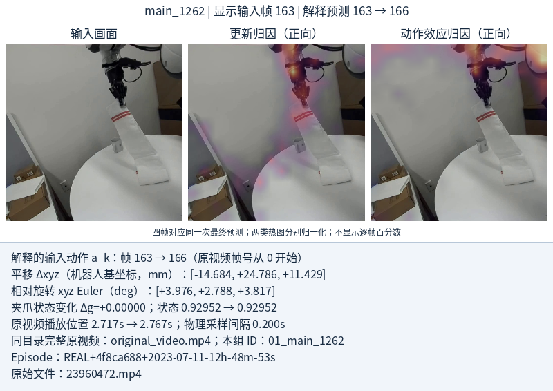
解释的输入动作 a_k：帧 162 → 166（原视频帧号从 0 开始）
平移 Δxyz（机器人基坐标，mm）：[+2.719, +2.386, -0.005]
相对旋转 xyz Euler（deg）：[+0.034, -0.181, +0.214]
夹爪状态变化 Δg=+0.12335；状态 0.07048 → 0.19383
原视频播放位置 2.700s → 2.767s；物理采样间隔 0.267s
同目录完整原视频：original_video.mp4；本组 ID：02_main_1180
Episode：TRI+52ca9b6a+2023-10-19-10h-03m-58s
原始文件：28451778.mp4
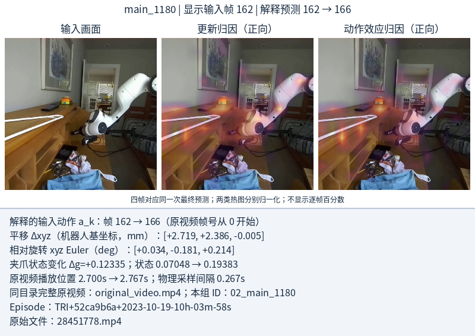
解释的输入动作 a_k：帧 141 → 145（原视频帧号从 0 开始）
平移 Δxyz（机器人基坐标，mm）：[+15.257, +27.571, +16.287]
相对旋转 xyz Euler（deg）：[-1.484, +3.560, +1.455]
夹爪状态变化 Δg=-0.00441；状态 0.92070 → 0.91630
原视频播放位置 2.350s → 2.417s；物理采样间隔 0.300s
同目录完整原视频：original_video.mp4；本组 ID：03_main_0862
Episode：REAL+4f8ca688+2023-07-04-15h-22m-17s
原始文件：23960472.mp4
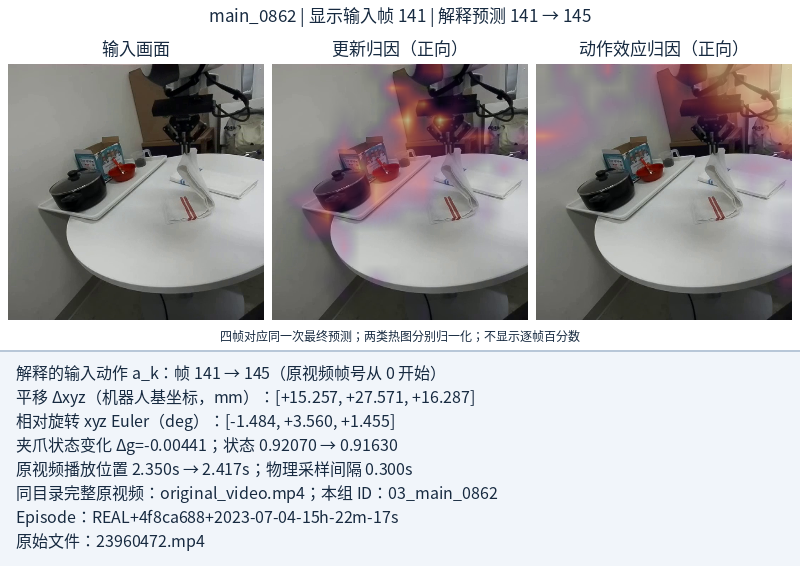
解释的输入动作 a_k：帧 42 → 46（原视频帧号从 0 开始）
平移 Δxyz（机器人基坐标，mm）：[+4.015, +1.774, +0.827]
相对旋转 xyz Euler（deg）：[-0.544, -0.832, -1.553]
夹爪状态变化 Δg=+0.00000；状态 0.00000 → 0.00000
原视频播放位置 0.700s → 0.767s；物理采样间隔 0.283s
同目录完整原视频：original_video.mp4；本组 ID：04_main_0362
Episode：TRI+52ca9b6a+2023-10-18-13h-40m-06s
原始文件：28451778.mp4
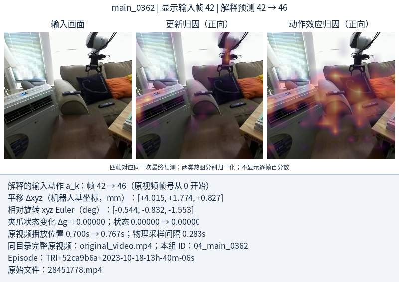
解释的输入动作 a_k：帧 103 → 106（原视频帧号从 0 开始）
平移 Δxyz（机器人基坐标，mm）：[+1.956, -0.374, -0.591]
相对旋转 xyz Euler（deg）：[+0.257, -0.237, -0.100]
夹爪状态变化 Δg=+0.22467；状态 0.08370 → 0.30837
原视频播放位置 1.717s → 1.767s；物理采样间隔 0.216s
同目录完整原视频：original_video.mp4；本组 ID：05_main_0248
Episode：REAL+de601749+2023-06-19-16h-40m-11s
原始文件：23960472.mp4
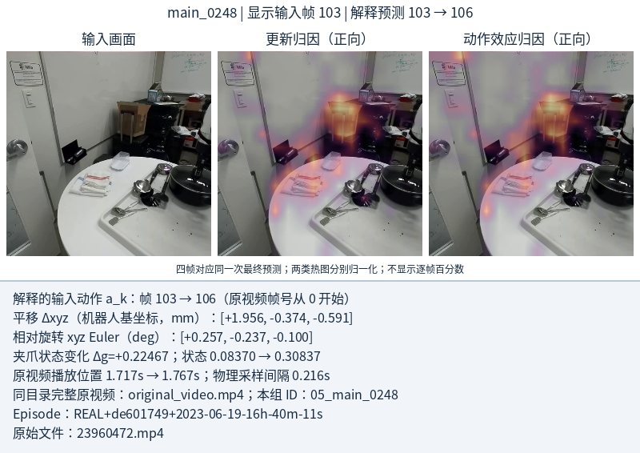
解释的输入动作 a_k：帧 148 → 152（原视频帧号从 0 开始）
平移 Δxyz（机器人基坐标，mm）：[+3.406, -8.090, -7.342]
相对旋转 xyz Euler（deg）：[-1.692, +0.540, -3.613]
夹爪状态变化 Δg=+0.00000；状态 0.92952 → 0.92952
原视频播放位置 2.467s → 2.533s；物理采样间隔 0.283s
同目录完整原视频：original_video.mp4；本组 ID：06_main_1257
Episode：REAL+4f8ca688+2023-07-25-13h-47m-43s
原始文件：23960472.mp4
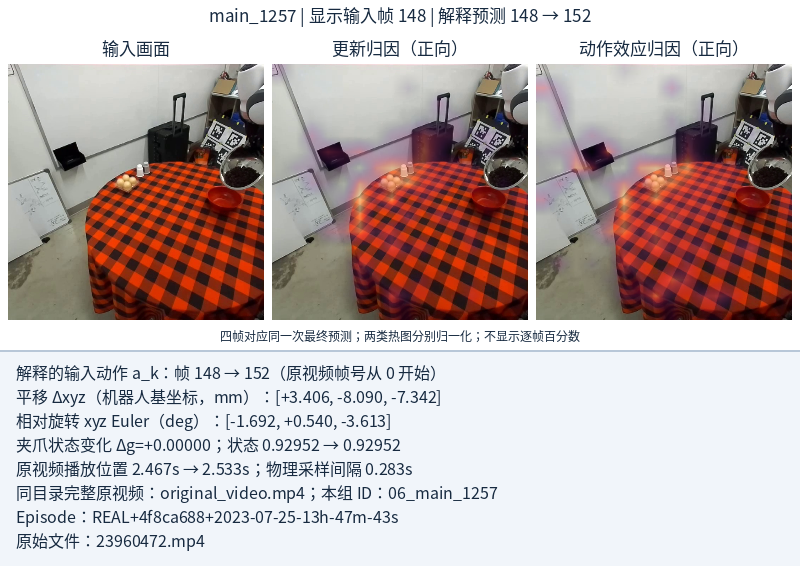
解释的输入动作 a_k：帧 103 → 107（原视频帧号从 0 开始）
平移 Δxyz（机器人基坐标，mm）：[+14.721, +9.703, -11.748]
相对旋转 xyz Euler（deg）：[+1.069, -0.732, -2.536]
夹爪状态变化 Δg=+0.00000；状态 0.00000 → 0.00000
原视频播放位置 1.717s → 1.783s；物理采样间隔 0.283s
同目录完整原视频：original_video.mp4；本组 ID：07_main_0867
Episode：PennPAL+acda9df3+2023-07-14-17h-23m-12s
原始文件：25455306.mp4
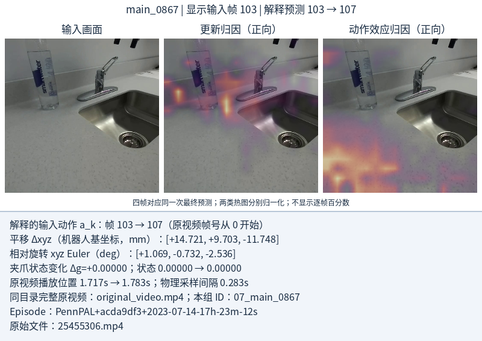
解释的输入动作 a_k：帧 35 → 39（原视频帧号从 0 开始）
平移 Δxyz（机器人基坐标，mm）：[+21.998, +16.685, -5.117]
相对旋转 xyz Euler（deg）：[-0.708, -0.822, +2.002]
夹爪状态变化 Δg=+0.30837；状态 0.13656 → 0.44493
原视频播放位置 0.583s → 0.650s；物理采样间隔 0.283s
同目录完整原视频：original_video.mp4；本组 ID：08_main_0906
Episode：REAL+4f8ca688+2023-08-15-14h-20m-53s
原始文件：23960472.mp4
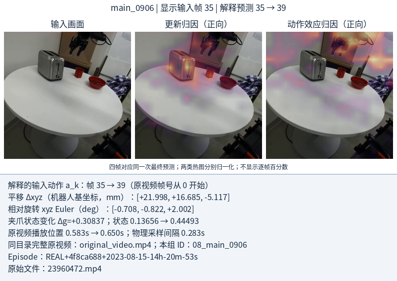
解释的输入动作 a_k：帧 103 → 106（原视频帧号从 0 开始）
平移 Δxyz（机器人基坐标，mm）：[-1.062, +14.263, -0.767]
相对旋转 xyz Euler（deg）：[+1.165, -0.446, +0.617]
夹爪状态变化 Δg=+0.00000；状态 0.99119 → 0.99119
原视频播放位置 1.717s → 1.767s；物理采样间隔 0.200s
同目录完整原视频：original_video.mp4；本组 ID：09_main_1420
Episode：PennPAL+acda9df3+2023-06-29-20h-31m-34s
原始文件：25455306.mp4
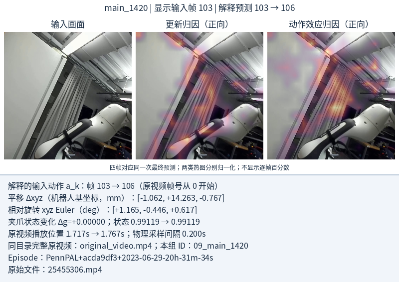
解释的输入动作 a_k：帧 49 → 53（原视频帧号从 0 开始）
平移 Δxyz（机器人基坐标，mm）：[+14.011, -4.532, -31.886]
相对旋转 xyz Euler（deg）：[+0.541, +2.223, -1.665]
夹爪状态变化 Δg=+0.00000；状态 0.00000 → 0.00000
原视频播放位置 0.817s → 0.883s；物理采样间隔 0.284s
同目录完整原视频：original_video.mp4；本组 ID：10_main_0757
Episode：REAL+de601749+2023-05-19-12h-07m-20s
原始文件：23960472.mp4
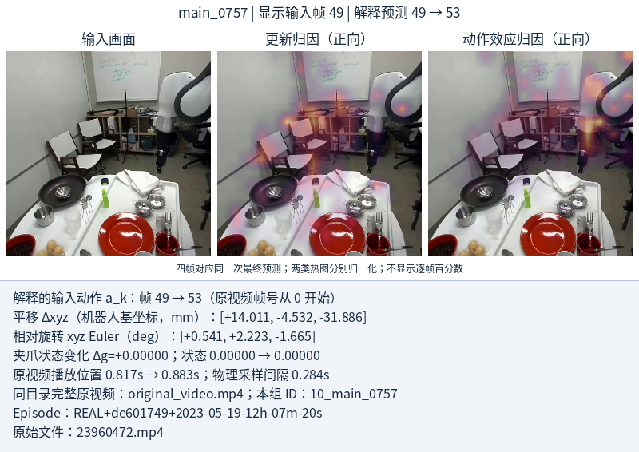
解释的输入动作 a_k：帧 144 → 147（原视频帧号从 0 开始）
平移 Δxyz（机器人基坐标，mm）：[-1.012, +6.837, -7.273]
相对旋转 xyz Euler（deg）：[-0.426, +0.757, +0.377]
夹爪状态变化 Δg=+0.00000；状态 0.00000 → 0.00000
原视频播放位置 2.400s → 2.450s；物理采样间隔 0.233s
同目录完整原视频：original_video.mp4；本组 ID：11_report_main_0000
Episode：CLVR+13759f6e+2023-05-15-02h-10m-02s
原始文件：20103212.mp4
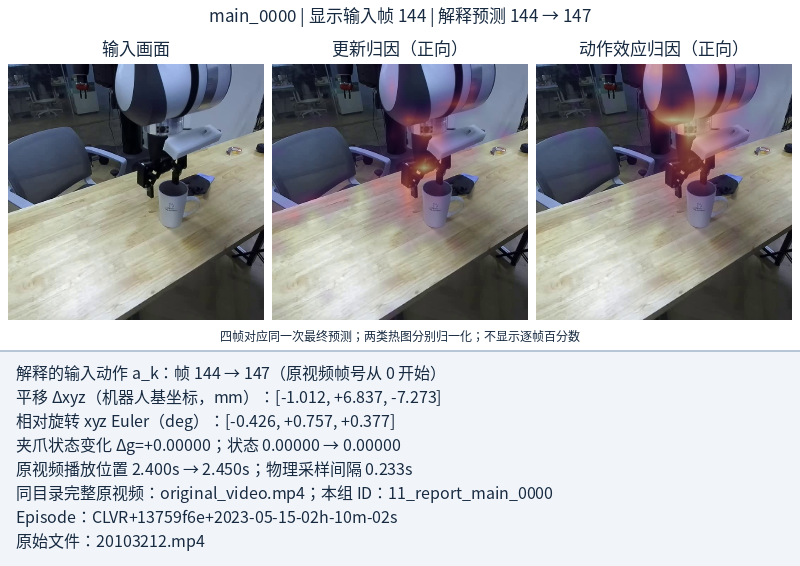
Data: DROID Dataset Team. Model: Meta FAIR V-JEPA 2-AC. Heatmaps are experimental analysis, not verified causal visual evidence.